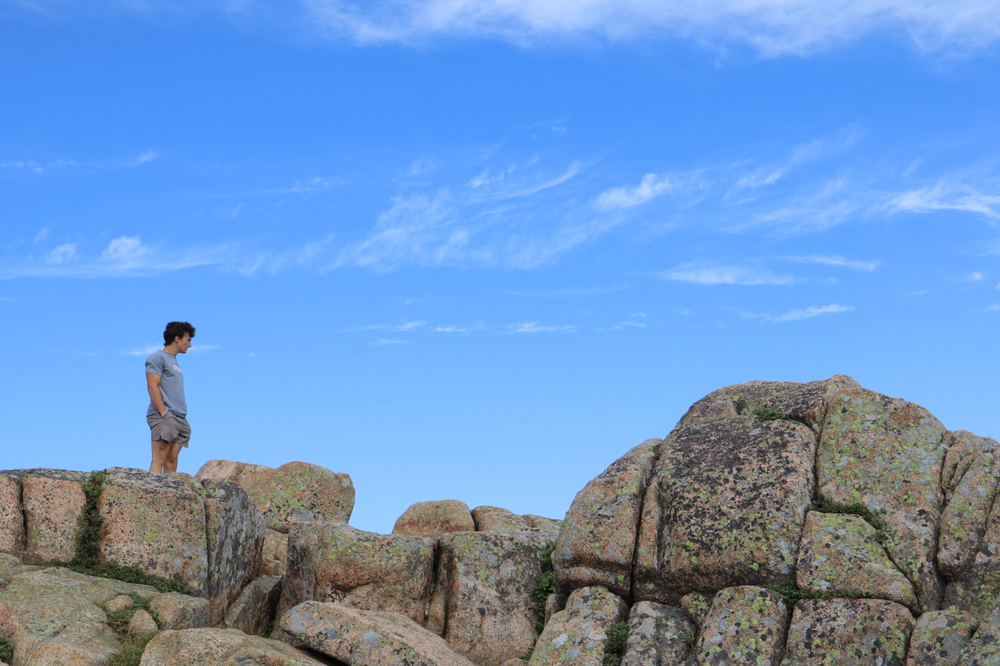
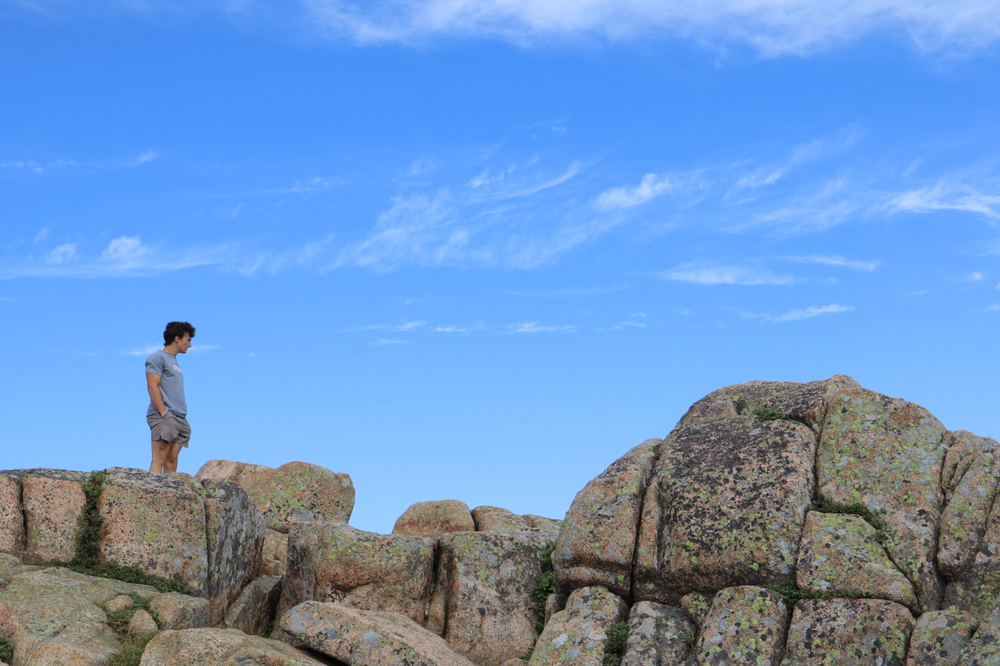

Hello There!
My Name is Dylan!
About Me
I'm a senior at Penn State Behrend and will graduate with my B.S in Computer Science in May 2026! I have worked on many different projects, ranging from Machine Learning research on Acoustic signal processing to full-stack enterprise systems in the industry. I love learning new things and honing my developer skillset!
My Hobbies
I have a very diverse set of hobbies that I like to do in my spare time. Some of which include:
- Hunting
- Fishing
- Learning new Programming Langauges
- Exercising
- Reading
- Playing Video Games
- Hiking
Below, I have included some photos of me doing my favorite things. Here, you'll see that I like turkey hunting and hiking in Maine!

 


Education
| School | GPA |
|---|